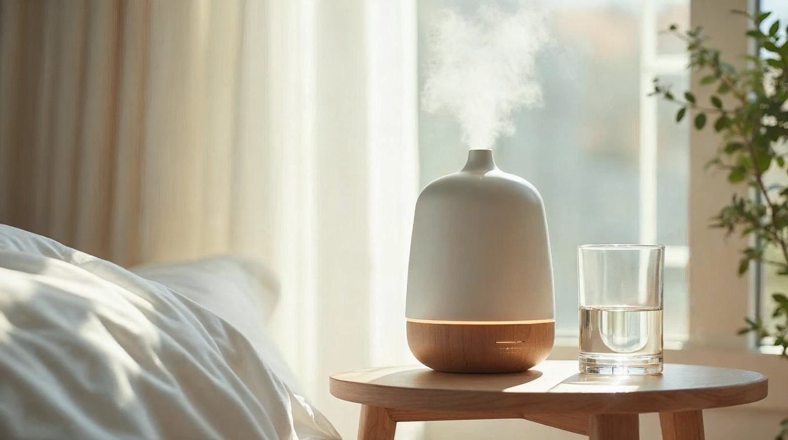
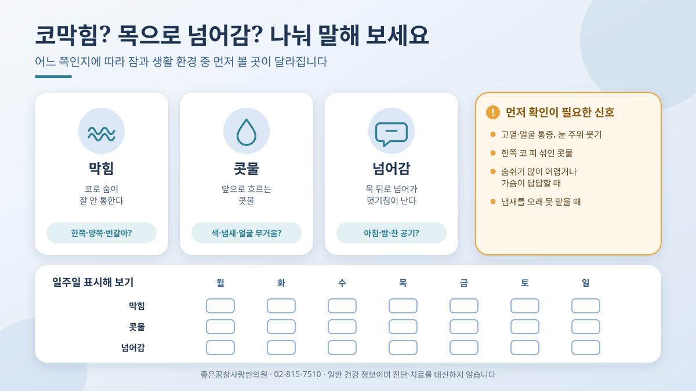

이종호 한의사 감수좋은꿈참사랑한의원 대표원장 (한의사 면허번호 19769)발행 2026-11-23 · 수정 2026-11-26
이 글의 차례
- 세 가지 느낌, 이렇게 나눠 보세요
- 왜 이런 불편이 생길 수 있나요
- 왜 아침과 밤에 더 불편할까요?
- 코 불편이 잠과 하루에 어떤 영향을 주나요?
- 비슷해 보여도 따로 살펴야 하는 경우는요?
- 먼저 이렇게 여쭙니다
- 예를 들면 이런 상황입니다
- 스스로 점검해 보세요
- 일상에서 먼저 해 볼 수 있는 것
- 집 안 환경은 어디부터 손보면 될까요?
- 직장이나 바깥에서는 무엇을 챙기면 좋을까요?
- 한의원에서 함께 살필 수 있는 경우
- 첫 방문은 이렇게 진행됩니다
- 침과 한약은 어떤 때 이야기하나요?
- 다시 오시면 무엇을 여쭙나요?
- 얼마나 지켜보고 언제 상담할까요
- 이렇게 기록해 오시면 상담이 쉬워집니다
- 이런 증상은 먼저 확인이 필요합니다
코가 불편하다는 말에는 막힘, 콧물, 목으로 넘어가는 느낌이 섞여 있습니다. 숨이 코로 잘 안 통하는지, 목 뒤로 무언가 넘어가 헛기침이 나는지 나눠 말씀해 주시면 생활 환경과 잠 중 어느 쪽을 먼저 살펴볼지 정하기 쉽습니다.
새벽에 코가 막혀 입을 벌리고 자다가 목이 바짝 마른 채 깨는 날이 있습니다. 출근해서는 회의 중에 자꾸 목을 가다듬게 되지요.
진료실에서 코가 불편하다는 말씀을 들으면 저는 입을 다물고 코로만 숨을 쉬면 어떤지부터 여쭙곤 합니다. 숨이 잘 안 들어가 답답해하시는 분과, 숨은 잘 쉬는데 목 뒤가 걸린다며 목을 가다듬는 분이 각각 다른 이야기를 하고 계신 경우가 많습니다.
세 가지 느낌, 이렇게 나눠 보세요
- 막힘: 코로 숨이 잘 안 통해 입으로 숨을 쉬게 됩니다. 한쪽이 막히거나 양쪽이 번갈아 막히고, 누우면 더 심해진다고 하십니다.
- 앞으로 흐르는 콧물: 휴지를 자주 찾게 되고, 맑은 콧물이 주르륵 흐르거나 재채기와 함께 쏟아지기도 합니다.
- 목으로 넘어가는 느낌: 코를 풀어도 별로 나오지 않는데 목 뒤로 무언가 계속 넘어가는 것 같고, 헛기침과 "흠흠" 하는 목 가다듬기가 잦습니다.
말로 옮기면 막힘은 "코가 꽉 막혔어요", 콧물은 "콧물이 줄줄 흘러요", 넘어감은 "목에 가래가 걸린 것 같아요"에 가깝습니다. 목으로 넘어가는 느낌은 가래로 오해하기 쉬워, 코를 풀 때 나오는지 목에서 뱉을 때 나오는지 나눠 보시면 좋습니다.
여러 느낌이 함께 있어도 괜찮습니다. 아침에는 넘어가는 느낌이 크고, 낮에는 막힘이 크고, 찬 바람을 쐬면 콧물이 흐르는 식으로 시간대마다 다르다면 그렇게 나눠 말씀해 주세요.
왜 이런 불편이 생길 수 있나요
- 코막힘은 코 안쪽 점막이 부어 공기 길이 좁아질 때 생기는 경우가 많습니다.
- 목 뒤로 넘어가는 느낌은 콧물이 앞보다 뒤쪽으로 흐를 때 생겨 헛기침과 목 가다듬기로 이어지기도 합니다.
- 건조한 실내, 찬 공기, 먼지, 반려동물 털처럼 주변 환경이 영향을 주기도 합니다.
- 코가 막혀 입으로 숨을 쉬면 잠이 얕아지고 아침에 목이 마를 수 있습니다.
조금 더 풀어 보면, 코 안쪽 점막은 들이쉬는 공기를 데우고 촉촉하게 만들며 먼지를 걸러 내는 일을 합니다. 찬 공기나 건조한 공기, 먼지 같은 자극이 이어지면 점막이 이를 막으려고 붓고 분비물을 늘리게 됩니다.
분비물은 평소에도 조금씩 목 뒤로 넘어가 삼켜지지만, 양이 늘거나 끈적해지면 그 느낌이 또렷해집니다. 특히 누워 있는 동안 고여 있다가 아침에 일어나면 한꺼번에 느껴져, 아침마다 목을 가다듬는다는 분이 많습니다.
왜 아침과 밤에 더 불편할까요?
누우면 머리 쪽으로 피가 더 몰리면서 코 안쪽 점막이 붓기 쉬워집니다. 그래서 낮에는 괜찮다가도 잠자리에 누우면 코가 막히고, 옆으로 누우면 아래쪽 코가 더 막힌다고 말씀하시는 분이 많습니다.
아침에 목이 칼칼하고 헛기침이 잦다면 전날 밤 방의 온도와 습도, 베개 높이, 잠든 자세가 중요한 단서가 됩니다.
반대로 낮에 바깥 찬 공기를 쐬거나 먼지 많은 곳에 있을 때 심하다면 환경 쪽 자극을 먼저 살핍니다. 언제 심한지를 적어 주시면 어느 쪽부터 손볼지 정하기가 훨씬 쉬워집니다.
코 불편이 잠과 하루에 어떤 영향을 주나요?
코 때문에 밤잠이 얕아지면 본인은 잘 잤다고 생각해도 아침에 개운하지 않고, 낮에 집중이 잘 안 되거나 머리가 무겁다고 말씀하시는 분이 많습니다.
목으로 넘어가는 느낌이 큰 분은 낮 동안 헛기침과 목 가다듬기가 잦아 대화나 회의 중에 신경이 쓰인다고 하십니다. 목을 자주 가다듬으면 목이 더 예민해지기도 해서, 가다듬고 싶을 때 물 한 모금을 먼저 마셔 보시길 권합니다.
그래서 저는 코 이야기를 들을 때 낮의 피로와 집중, 아침의 개운함까지 함께 여쭙습니다. 코의 불편이 하루 전체에 얼마나 영향을 주는지 알면 무엇부터 손볼지 순서를 정하기가 쉬워집니다.
비슷해 보여도 따로 살펴야 하는 경우는요?
- 감기 뒤 열흘이 지나도 누렇고 진한 콧물이 이어지고 얼굴이 무겁다면 코 곁 공간 쪽 확인이 필요할 수 있어 이비인후과 진료를 권합니다.
- 해마다 같은 계절에 맑은 콧물과 재채기, 눈 가려움이 함께 온다면 알레르기 쪽 이야기에 가까워, 시작하는 달을 기록해 주세요.
- 속쓰림이 있고 목에 무언가 걸린 느낌이 식사 뒤나 누울 때 심하다면 코보다 위에서 올라오는 쪽 이야기일 수 있어 함께 여쭙니다.
- 한쪽 코만 오래 막혀 있다면 코 안쪽 구조를 확인해 볼 필요가 있어 이비인후과 진료를 함께 권합니다.
목 뒤로 넘어가는 쪽이 크다면 콧물이 목 뒤로 넘어가 자꾸 헛기침이 나는 후비루는 왜 생기고 어떻게 살피나요?, 늘 한쪽만 막힌다면 늘 한쪽 코만 막혀 있을 때, 비중격만곡과 비염은 어떻게 나눠 살피나요?도 함께 읽어 보세요.

먼저 이렇게 여쭙니다
- 코로 숨쉬기가 어려운가요, 목 뒤로 무언가 넘어가나요?
- 한쪽 코가 막히나요, 양쪽인가요? 번갈아 막히나요?
- 아침, 밤, 찬 공기 속 중 언제 심한가요?
- 콧물 색과 냄새, 얼굴이 무겁거나 아픈 느낌이 있나요?
- 코 스프레이나 다른 약을 쓰고 있나요?
예를 들면 이런 상황입니다
- 예를 들어 난방을 세게 튼 방에서 자고 일어나면 목이 마르고 목 뒤로 끈적한 것이 넘어가 헛기침이 이어지는 경우, 넘어가는 느낌 쪽입니다. 방의 습도와 난방 온도를 함께 적어 주세요.
- 예를 들어 지하철에서 내려 찬 바람을 맞으면 맑은 콧물이 줄줄 흐르고 재채기가 나는 경우, 앞으로 흐르는 콧물 쪽입니다. 기온이 떨어진 날과 겹치는지 살펴봅니다.
- 예를 들어 밤마다 코가 막혀 입을 벌리고 자고, 가족에게 코를 곤다는 말을 듣는 경우, 막힘 쪽이면서 잠과도 이어진 모습입니다. 깬 횟수와 아침의 개운함을 함께 적어 주세요.
스스로 점검해 보세요
- 입을 다물면 코로 숨쉬기가 답답하다.
- 누우면 코가 더 막히고, 옆으로 누우면 아래쪽 코가 막힌다.
- 코를 풀어도 별로 나오지 않는데 목 뒤가 걸린다.
- 아침마다 목을 가다듬거나 헛기침을 한다.
- 찬 바람이나 먼지에 맑은 콧물과 재채기가 쏟아진다.
- 아침에 일어나면 입과 목이 바짝 말라 있다.
첫째·둘째는 막힘, 셋째·넷째는 넘어감, 다섯째는 콧물 쪽 단서입니다. 여섯째에 해당한다면 밤에 입으로 숨을 쉬고 있을 가능성이 있어 잠자리 환경을 함께 살핍니다.

일상에서 먼저 해 볼 수 있는 것
- 실내 습도를 적당히 유지하고 하루 두세 번 환기하기
- 미지근한 물을 자주 마셔 목을 촉촉하게 하기
- 찬 공기 속에 나갈 때는 마스크나 목도리로 코와 목 감싸기
- 베개를 조금 높여 목 뒤로 넘어가는 느낌 줄여 보기
- 침구와 커튼을 자주 세탁해 먼지 줄이기
예를 들어 아침마다 목 뒤로 넘어가는 느낌이 심하다면 전날 밤 방의 습도와 베개 높이를 적어 두고, 하나씩 바꿔 보며 어느 날 덜했는지 비교해 보세요.
막힘 쪽이라면 잠들기 전 따뜻한 물로 샤워하며 김을 쐬어 보세요. 넘어감 쪽이라면 아침에 일어나 미지근한 물을 한 모금씩 천천히 마셔 보세요.
코가 불편한 시기에는 맵고 뜨거운 음식을 먹을 때 콧물이 더 흐르거나, 술을 마신 날 밤 코가 더 막힌다는 분도 있습니다. 그런 날이 있었다면 날짜와 함께 기록에 꼭 적어 주세요.
식염수로 코를 세척하는 분도 많습니다. 처음 해 보신다면 제품 사용법대로 정해진 식염수를 쓰고, 물 온도와 양을 지키며 부드럽게 해 주세요. 하고 난 뒤 귀가 먹먹하거나 더 불편하다면 멈추고 진료 때 말씀해 주시면 됩니다.
집 안 환경은 어디부터 손보면 될까요?
- 침실: 잠자는 방은 너무 덥지 않게 하고, 가습기를 쓴다면 물통을 날마다 비우고 말려 깨끗하게 관리해 주세요. 젖은 빨래를 널어 두는 것도 방법입니다.
- 침구: 베개와 이불은 일주일에 한 번쯤 뜨거운 물에 빨거나 햇볕에 말리고, 두꺼운 카펫이나 털이 긴 담요는 먼지가 쌓이기 쉬워 줄여 보세요.
- 반려동물: 함께 지내신다면 침실만큼은 들어오지 않게 해 보고, 그 뒤로 달라진 점이 있는지 기록해 보세요. 차이가 보이면 진료 때 말씀해 주세요.
- 환기: 미세먼지가 심한 날을 피해 하루 두세 번, 10분씩 창문을 열어 공기를 바꿔 주세요.
한꺼번에 모두 바꾸려 하면 부담이 커지고 무엇이 도움이 되었는지 알기 어렵습니다. 기록에서 가장 의심되는 것 하나부터 바꾸고, 일주일쯤 지켜본 뒤 다음 것으로 넘어가 보세요.
직장이나 바깥에서는 무엇을 챙기면 좋을까요?
사무실 냉난방 바람이 얼굴로 바로 오는 자리라면 바람 방향을 바꾸거나 작은 가리개를 두어 보세요. 책상 위에 물병을 두고 한 시간에 몇 모금씩 마시는 습관도 들여 보시면 좋습니다.
출퇴근길 찬 바람이 시작될 때는 얇은 마스크나 목도리로 코와 목을 먼저 감싸 주세요. 실내에 들어와서는 바로 벗기보다 몇 분쯤 몸이 실내 온도에 익숙해진 뒤 벗어 보세요.

한의원에서 함께 살필 수 있는 경우
- 밤마다 코가 막혀 입으로 숨 쉬고 잠을 설치는 경우 잠자리 환경과 잠의 모양을 함께 살핍니다.
- 목 뒤로 넘어가는 느낌 때문에 헛기침이 잦은 경우 실내 공기와 생활 습관을 함께 살핍니다.
- 찬 공기에 코와 목이 예민해지는 경우 몸의 온기와 계절에 맞는 생활을 함께 살핍니다.
좋은꿈참사랑한의원에서는 모든 분께 그렇듯 맥부터 짚으며 코와 목의 불편, 잠의 변화를 여쭙고, 필요하면 혀(설진)도 살핀 뒤 상태에 맞춰 침이나 한약 상담 등을 정합니다. 이비인후과 확인이 먼저 필요해 보이면 그 순서도 안내합니다.
첫 방문은 이렇게 진행됩니다
- 맥부터 짚기: 모든 분의 맥을 먼저 짚고, 짚는 동안에도 세 가지 느낌 가운데 어느 쪽이 큰지, 언제 심한지, 언제부터였는지 여쭙습니다. 필요하다고 판단될 때 혀도 함께 봅니다.
- 생활 함께 보기: 방의 습도와 난방, 잠든 자세, 반려동물과 먼지처럼 심해지는 조건을 적어 오신 기록과 함께 봅니다.
- 방향 정하기: 상태에 맞춰 침이나 한약 상담을 정합니다. 한약은 지금 쓰고 계신 약을 먼저 확인한 뒤 이야기하고, 임신 중이시면 먼저 알려 주세요.
침과 한약은 어떤 때 이야기하나요?
생활 환경을 먼저 손보는 것이 출발점이지만, 바꿔 봐도 불편이 되풀이되거나 몸이 차고 찬 공기에 유난히 예민한 분, 코 때문에 잠이 얕아 피로가 쌓인 분은 침이나 한약을 함께 상의합니다. 어느 쪽을 쓸지는 맥과 혀, 기록에서 보이는 흐름을 보고 정합니다.
같은 코막힘이라도 몸이 차고 맑은 콧물이 많은 분, 열감이 있고 분비물이 끈적한 분, 피로가 쌓일수록 심해지는 분은 살피는 방향이 다릅니다. 그래서 코 이야기와 함께 잠, 소화, 몸의 온기도 차례로 여쭙습니다.
저는 잘 먹고, 잘 싸고, 잘 자고, 마음 편하고, 몸 따뜻하게, 이 다섯 가지를 몸이 회복하는 바탕으로 봅니다. 코가 막혀 밤잠이 얕아지면 '잘 자고'가 흔들리고, 찬 공기에 코부터 반응한다면 '몸 따뜻하게'와 이어져 있을 수 있습니다. 코만 따로 떼어 보지 않으려는 이유입니다.
다시 오시면 무엇을 여쭙나요?
두 번째 진료부터는 세 칸 가운데 어느 칸이 줄고 어느 칸이 남았는지, 함께 정한 습도나 베개 높이를 바꿔 보셨는지부터 여쭙니다. 줄어든 칸이 있다면 그 습관을 이어 가고, 남은 칸에 맞춰 다음 한 가지를 정합니다.
밤에 입으로 숨 쉬는 일이 줄었는지, 아침의 헛기침이 몇 번에서 몇 번으로 바뀌었는지처럼 숫자로 말씀해 주시면 변화를 보기 쉽습니다. 날씨가 크게 바뀐 주가 있었다면 그것도 함께 알려 주세요.
얼마나 지켜보고 언제 상담할까요
- 습도, 베개 높이, 마스크 같은 생활 조정을 1~2주 해 보며 세 칸 기록을 이어 가 봅니다.
- 생활을 바꿔도 2주 넘게 같은 불편이 이어지거나, 코 때문에 잠을 자주 설친다면 상담을 받아 보세요.
- 해마다 같은 계절에 되풀이된다면 시작하기 몇 주 전부터 생활을 미리 준비하는 방법을 함께 이야기합니다.
이렇게 기록해 오시면 상담이 쉬워집니다
- 막힘, 콧물, 넘어감 세 칸에 날마다 표시한 것
- 잘 때 입으로 숨을 쉬는지(가족에게 물어보기)
- 방의 습도와 환기 시각
- 먼지, 반려동물, 찬 공기 등 심해지는 상황
기록 한 줄은 "금요일 아침, 넘어감 많음, 헛기침 잦음, 전날 밤 난방 세게, 습도 낮음"처럼 때, 칸, 함께 온 증상, 전날 환경만 적으면 충분합니다. 바꿔 본 것이 있다면 그 옆에 짧게 덧붙여 주세요.
콧물이 있다면 색과 끈적한 정도도 한 단어로 적어 주세요. 맑은지, 하얗게 탁한지, 누런지, 그리고 물처럼 묽은지 끈적한지에 따라 여쭐 질문이 달라집니다. 휴지에 묻은 모습을 사진으로 남겨 오시는 분도 있는데, 그렇게 해 주셔도 괜찮습니다.
코 스프레이나 알레르기약을 처방받아 쓰고 계시다면 처방한 의사와 상의 없이 줄이거나 끊지 않습니다.
코가 답답한 날은 숨 쉬는 일 하나하나가 신경 쓰여 하루가 길게 느껴집니다. 그래도 어느 쪽이 불편한지 나눠 보려는 지금이 좋은 출발입니다. 다음에 오시면 막힘, 콧물, 넘어감 가운데 어느 칸이 가장 컸는지부터 여쭙겠습니다.
이런 증상은 먼저 확인이 필요합니다
- 고열이나 심한 얼굴 통증이 있거나 눈 주위가 붓는 경우
- 한쪽 코에서만 피가 섞인 콧물이 계속 나오는 경우
이런 신호가 있으면 한의원보다 가까운 병원이나 응급실을 먼저 찾으세요.

여쭙는 것
- 코로 숨쉬기가 어려운가요, 목 뒤로 무언가 넘어가나요?
- 한쪽 코가 막히나요, 양쪽인가요? 번갈아 막히나요?
- 아침, 밤, 찬 공기 속 중 언제 심한가요?
생활에서 해 볼 것
- 실내 습도를 적당히 유지하고 하루 두세 번 환기하기
- 미지근한 물을 자주 마셔 목을 촉촉하게 하기
- 찬 공기 속에 나갈 때는 마스크나 목도리로 코와 목 감싸기
한의원에서 함께 살필 것
- 밤마다 코가 막혀 입으로 숨 쉬고 잠을 설치는 경우 잠자리 환경과 잠의 모양을 함께…
- 목 뒤로 넘어가는 느낌 때문에 헛기침이 잦은 경우 실내 공기와 생활 습관을 함께 살…
- 찬 공기에 코와 목이 예민해지는 경우 몸의 온기와 계절에 맞는 생활을 함께 살핍니다.
먼저 확인이 필요한 신호
- 고열이나 심한 얼굴 통증이 있거나 눈 주위가 붓는 경우
- 한쪽 코에서만 피가 섞인 콧물이 계속 나오는 경우
한눈에 보는 표
| 구분 | 핵심 |
|---|---|
| 여쭙는 것 | 코로 숨쉬기가 어려운가요, 목 뒤로 무언가 넘어가나요? 한쪽 코가 막히나요, 양쪽인가요? 번갈아 막히나요? |
| 생활에서 해 볼 것 | 실내 습도를 적당히 유지하고 하루 두세 번 환기하기 미지근한 물을 자주 마셔 목을 촉촉하게 하기 |
| 한의원에서 함께 살필 것 | 밤마다 코가 막혀 입으로 숨 쉬고 잠을 설치는 경우 잠자리 환경과 잠의 모양을 함께 살핍니다. 목 뒤로 넘어가는 느낌 때문에 헛기침이 잦은 경우 실내 공기와 생활 습관을 함께 살핍니다. |
| 먼저 확인이 필요한 신호 | 고열이나 심한 얼굴 통증이 있거나 눈 주위가 붓는 경우 한쪽 코에서만 피가 섞인 콧물이 계속 나오는 경우 |
자주 묻는 질문
코 스프레이를 쓰고 있으면 알려야 하나요?
네. 종류와 쓰는 기간, 횟수를 알려 주세요. 오래 쓰고 있다면 처방받은 곳과도 상의해 주세요.
계절마다 반복되면요?
어느 달에 시작되는지 적어 오시면 생활에서 미리 준비할 부분을 함께 찾기 쉽습니다.
아이도 같은 방법으로 기록하면 되나요?
네. 아이는 잘 때 입을 벌리는지, 코를 고는지, 아침에 목이 아프다고 하는지를 보호자가 적어 오시면 됩니다.
코막힘 때문에 잠을 설치는데 함께 볼 수 있나요?
네. 잠자리 환경과 잠의 모양을 함께 여쭙니다. 자다가 숨이 멎는 듯하다는 말을 들었다면 수면 검사 확인도 권합니다.
좋은꿈참사랑한의원은 재진 때 지난번 이야기부터 이어서 여쭙니다. 진료시간과 예약은 오시는 길에서 확인하세요.
어디서 상담받을 수 있나요?
좋은꿈참사랑한의원은 서울 동작구 만양로2길 2 신성빌딩 3층·5층(서울 동작구 상도동, 7호선 상도역 3번 출구 근처)에 있습니다. 한의사 3명(이종호 대표원장, 조영기 수석진료원장, 정원영 진료원장)이 진료합니다. 진료시간은 평일 09:30~20:00(점심 13:00~14:00), 토·일·공휴일 09:30~15:00이며, 방문 전 전화로 확인을 권합니다. 예약은 네이버 예약, 카카오톡 상담, 전화 02-815-7510로 받습니다.
이 글은 일반적인 건강 정보이며 개인의 진단이나 치료를 대신하지 않습니다. 증상이 있거나 복용 중인 약이 있다면 진료를 통해 확인하세요. 치료 효과는 개인마다 다를 수 있습니다.
작성 기준: 일반적으로 알려져 있는 건강 정보를 참고해 정리했습니다(대표원장 감수). 증상 기록은 1~2주 동안 하루 1회, 비슷한 시간에 적어 오시면 지난 상태와 비교하기 쉽습니다.